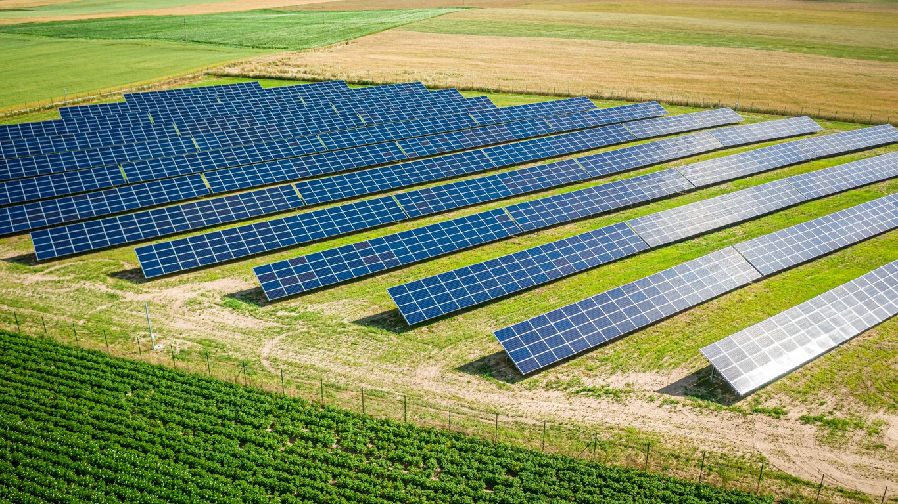

Віртуальна сонячна ферма
Олександр Пархоменко
Добропілля
Створити 3D-модель сонячної станції та розрахувати її ефективність.
Сонячна ферма — це велика кількість сонячних панелей, які виробляють електроенергію.
Сонячні панелі перетворюють сонячне світло в електричну енергію.

| Кількість панелей | Потужність | Місце | Генерація |
|---|---|---|---|
| 10 | 5 кВт | Дах школи | 5200 кВт·год/рік |
| 14 | 7 кВт | Поле 20×20 м | 7300 кВт·год/рік |
| 20 | 10 кВт | Поле 20×20 м | 10400 кВт·год/рік |
Сонячна енергетика є екологічним способом отримання електроенергії.